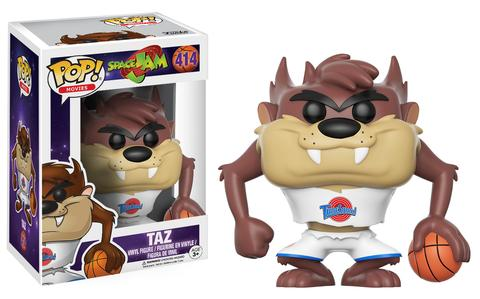
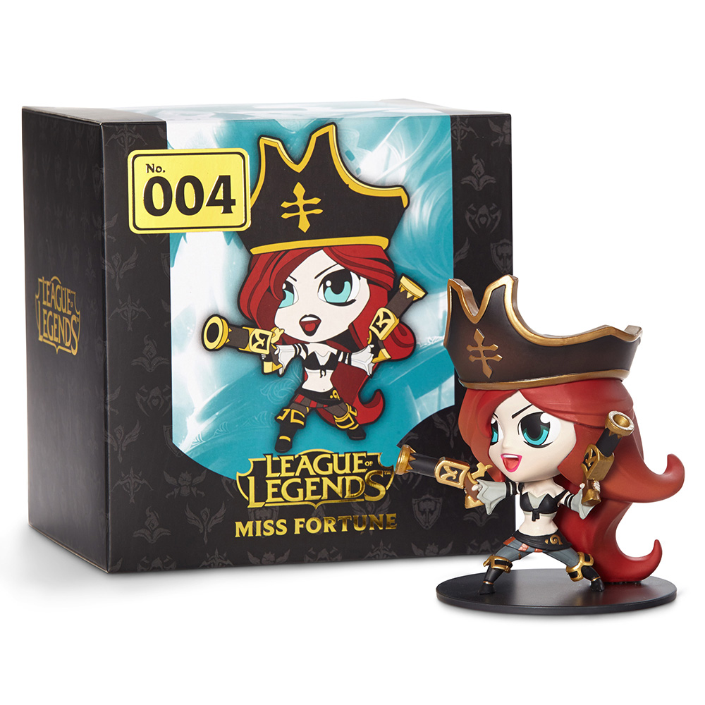

Los Funko Pop como podemos oberservar en la siguiente imagen son muñecos coleccionables con un cuerpo pequeño comparado con la cabeza
 Funko PoPEn la página web que os he dejado podréis mirarlos y comprarlos
El gran conocido juego League of Legends (LoL) también dentro de su merchandaising tiene sus propias figuritas coleccionables de las cueles muchas de ellas son Edición Limitada
 League of LegendsOtra de las cosas que venden aparte de las figuritas, la tienda oficial de League of Legends también vende ropa, pósters...
Tienda Oficial Leage of Legends